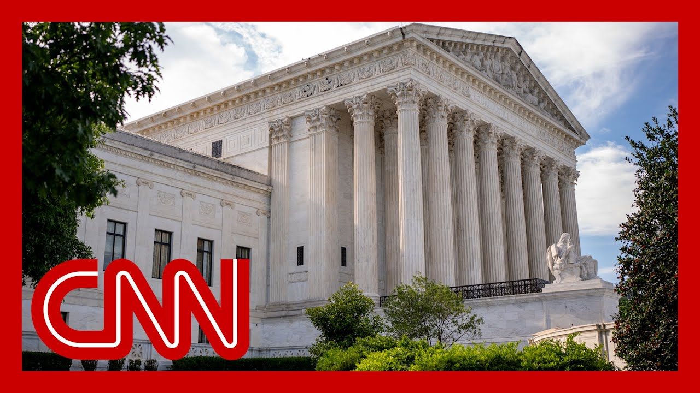

【CNN News 20250628 最高法院限制法官阻止特朗普的权力】
Summary: The Supreme Court's decision is a major victory for Trump, limiting judges' power to block nationwide policies, particularly impacting his executive actions, though constitutional questions on birthright citizenship remain unresolved.
摘要： 最高法院的裁决是特朗普的重大胜利，限制了法官阻止全国性政策的权力，尤其影响其行政行动，但出生公民权的宪法问题仍未解决。

⏱️ Estimated Reading Time: 18 min
📚 六级生词 📚 雅思生词 📚 托福生词 📚 专八生词 📚 SAT生词 📚 考研生词 📚 GRE生词 📚 高考生词
I'm going to go to Paula Reed.
我要去找保拉·里德。
She's been reading through the opinion.
她一直在阅读这份意见书。
Paula, what are you gluing from it?
保拉，你从中看出了什么？
All right, Pamela, here's what we know.
好的，帕梅拉，以下是我们了解的情况。
This is a big win for President Trump, because he has been railing against his so-called nationwide injunctions.
这是特朗普总统的重大胜利，因为他一直抨击所谓的全国性禁令。
This is the power of a single judge to block an executive order for the entire country.
这是单一法官阻止全国范围内行政命令的权力。
And this case came up as a result of multiple challenges to his effort to limit birthright citizenship through an executive order.
此案源于对他通过行政命令限制出生公民权的多项挑战。
Now, here it appears that the justice is.
现在，这里似乎显示大法官们。
Are agreeing with Trump and limiting this power that judges have to block a policy for the entire country.
同意特朗普的观点，限制法官阻止全国性政策的权力。
Now, on another issue, it does not appear that they have weighed in on whether Trump's effort to limit birthright citizenship is or is not constitutional.
在另一个问题上，他们似乎并未就特朗普限制出生公民权的努力是否合宪表态。
Instead, they are limiting the power of these judges to block policies for the entire country, which will likely allow Trump to proceed with this effort to limit birthright citizenship, while the larger constitutional questions, but whether he can do that, are being litigated.
相反，他们限制法官阻止全国性政策的权力，这可能让特朗普继续推进限制出生公民权的努力，而更大的宪法问题——他是否能这样做——仍在诉讼中。
Now, just to explain to you the significance of this, one of President Trump's lawyers told me this case, this is the ballgame for President Trump's agenda, because we know more than any modern president, he loves to govern through executive action.
为解释其重要性，特朗普的一名律师告诉我，此案是其议程的关键，因为相比任何现代总统，他更倾向于通过行政行动施政。
And the majority of these have been blocked by lower court judges, so he has not been able to follow through with things he wanted to do on the budget, on mass firings, on immigration.
其中多数被下级法院法官阻止，因此他无法在预算、大规模解雇和移民问题上推进计划。
So now that the justices are limiting the power that judges have to block those policies, this is going to allow them to implement these policies more quickly, though it is possible that some of these might come before the justices in two or three years, now with constitutional concerns.
如今大法官限制法官阻止这些政策的权力，将加速政策实施，尽管部分政策可能因宪法问题在两三年内再次提交最高法院。
But right now, the question was really, whether a single judge anywhere in the country could block an executive action for the entire nation.
但目前的核心问题是，国内任何单一法官能否阻止全国性行政行动。
And here, in a historic opinion, the justices are limiting that power.
而在此次历史性意见中，大法官们限制了这一权力。
And again, President Trump's lawyers have told me this is a v case that they are watching, this means everything for the president's ability to govern through executive actions.
特朗普的律师再次强调，这是他们关注的关键案件，关乎总统通过行政行动施政的能力。
Now we'll say, these nationwide injunctions, this is a bipartisan concern.
需指出，全国性禁令是两党共同关切的问题。
These have plagued every modern president, but because President Trump does so much through executive action, he has faced the greatest number of these nationwide injunctions.
它们困扰着每位现代总统，但因特朗普频繁使用行政行动，他面临的全国性禁令最多。
So he and his Republican allies here on Capitol Hill, they have been railing against these.
因此，他和国会共和党盟友一直强烈反对这些禁令。
This is a pet issue for them.
这是他们热衷的议题。
And now the conservative supermajority, citing with President Trump and his Republican allies to limit this power from judges, a huge decision.
如今保守派多数与特朗普及共和党盟友联手限制法官权力，这是一项重大裁决。
So just to be precise, Apollo, this was a 63 decision, six conservative justices, three liberal justices.
准确地说，这是6比3的裁决，六名保守派大法官对三名自由派大法官。
Is that right?
对吗？
And it was authored by Justice Amy Coney Barrett.
意见书由大法官埃米·科尼·巴雷特撰写。
Now, some of her conservative colleagues, it did also, upon concurrences here, we're still reading through those.
她的部分保守派同事也附议了协同意见书，我们仍在阅读。
We have old school, the paper copy.
我们有纸质版。
It is very long.
篇幅很长。
We're still getting through the whole opinion.
我们仍在研读全文。
So these were just the top lines, but this is enormous.
目前仅是重点，但影响巨大。
This isn't yet another huge win for President Trump from this conservative supermajority.
这是保守派多数给特朗普的又一重大胜利。
Now, we have been reporting since Trump took office in January that his lawyers were telling me, even though a lot of their policies were getting bogged down in the lower courts, that anything they could get in front of, this high court, that they would ultimately win.
自特朗普1月就职以来，其律师一直表示，尽管许多政策在下级法院受阻，但只要能提交至最高法院，他们终将获胜。
They were playing a long game, and this decision right here, this is proof that this long game they've been playing for the past six or seven months, they've won, and they've won big time.
他们在打持久战，而此次裁决证明，过去六七个月的策略大获全胜。
All right, Paula, standby.
好的，保拉，请待命。
We'll get back to you as you continue reading this opinion, and we'll see what the final decision is with a lot more specific details.
我们会在你继续研读意见书后联系你，了解最终裁决的更多细节。
I want to go to Jeff Zellini.
我想连线杰夫·泽利尼。
He's over at the White House for us, where they're watching very, very closely, probably more closely than any place else in the country right now.
他在白宫为我们报道，那里正密切关注此事，可能比国内任何地方都更关注。
What the US Supreme Court is doing?
美国最高法院在做什么？
There's no question about that, Wolf, and exactly what Paula was saying there.
毫无疑问，沃尔夫，正如保拉所言。
This is about something much broader than birthright citizenship.
这涉及比出生公民权更广泛的问题。
Yes, that specific issue was the venue to get this to the Supreme Court.
是的，该具体问题是将此案提交最高法院的途径。
That will likely be decided on a different day, but it is just the idea of this power of the executive branch that really is an issue here.
它可能改日裁决，但真正的争议在于行政部门的权力本身。
It's hard to think of another administration, and I've covered the last four or five presidents, I guess, that has used their executive authority as much, and it's been challenged by lower courts.
我报道过四五届总统，鲜有政府如此频繁使用行政权力并遭下级法院挑战。
Now, the Supreme Court is weighing in, and it is giving the executive branch considerable power.
如今最高法院介入，赋予行政部门相当大的权力。
One White House official, and they're reading through this opinion in the White House Council's office, just as everyone else is, but is pointing to this line, and it's Justice Amy Coney, Barrett's opinion.
一名白宫官员在白宫法律顾问办公室研读意见书时，特别提到巴雷特大法官的这一表述。
It says this, when a court concludes that the executive branch has acted unlawfully, the answer is not for the court to exceed its power, too.
意见书写道：当法院认定行政部门行为违法时，法院不应越权行事。
So basically, if the executive branch has exceeded its authority, a judge cannot also weigh in a singular judge.
简言之，若行政部门越权，单一法官也不应干预。
So the White House is viewing this ruling as very consequential that could affect a variety of policies, a variety of cases that exist really across the spectrum of what this administration has tried to do.
因此白宫视此裁决影响深远，可能波及政府尝试推行的各类政策和案件。
So there's no doubt, even though birthright citizenship was something the president long talked about, he campaigned on, this is bigger than that in a sense, because it is broader, and it's answering a question, at least for the moment, about the power of the executive branch that many lower courts have raised into question.
毫无疑问，尽管总统长期谈论并竞选时提及出生公民权，但此裁决意义更广，因为它至少暂时回应了下级法院对行政权力的质疑。
Jeff, so let me get the White House.
杰夫，请继续关注白宫。
Yeah, and obviously this impacts the power of the executive branch, but it impacts every single American as well, and I think that's a big focus here, because I remember, Ellie, during the oral arguments, one of the concerns brought up was if judges can't do the nation in the White Injunction, then you have a patchwork where the plaintiffs are under the injunction, but others in America wouldn't be under that.
是的，这显然影响行政权力，也关乎每位美国人。我记得口头辩论中有人担忧：若法官无法发布全国禁令，原告受禁令约束而其他美国人不受约束，将导致法律拼凑。
And so that's really the question here, how does it address that issue?
因此核心问题是：如何解决这一点？
Yeah, and in this case, in the birthright citizenship case, there was something like six different lawsuits filed in six different district courts.
在此案中，六个地方法院受理了约六起相关诉讼。
This case is an amalgamation of three of them that went up to the Supreme Court.
本案合并了其中三起提交至最高法院的诉讼。
So now they're going to be back in the district courts.
现在它们将发回地方法院重审。
That's where most of the action happens in the federal judiciary.
联邦司法系统的多数活动在此进行。
We're very focused on the U.S. Supreme Court, but this question remains in flux.
我们虽聚焦最高法院，但该问题仍悬而未决。
People who were born to parents who are not citizens could have different status in different districts at this moment.
目前，非公民父母所生子女在不同司法辖区可能身份不同。
I do want to read to the point that Paula and Jeff were making.
我想强调保拉和杰夫的观点。
This is a good sense of why this is so important.
这很好地解释了其重要性。
It's a quote from the opinion that's on page five written by Amy Coney Barrett.
引自巴雷特大法官意见书第五页：
She's writing for the six justice conservative majority, an expansion of presidential powers, a reduction in the powers of courts.
她代表六名保守派大法官写道：这是总统权力的扩张和法院权力的削弱。
Here's what Justice Barrett's writes.
巴雷特大法官写道：
By the end of the Biden administration, we had reached a state of affairs where almost every major presidential action was immediately frozen by a federal district court.
拜登政府末期，几乎每项重大总统行动都立即被联邦地方法院冻结。
As the number of universal injunctions has increased, so too has the importance of this issue.
随着全国性禁令增多，此问题愈发重要。
And I think that's a nice encapsulation of why this is such a big win for the Trump administration.
这很好地概括了为何这是特朗普政府的重大胜利。
And not just Donald John Trump, the person, but the office of the president, whoever comes next is going to get the benefit of this ruling too.
不仅是特朗普个人，总统职位本身及其继任者都将受益于此裁决。
And it's going to make it much harder, not impossible, but much harder for a single district court judge in Maryland or Wyoming or where have you to say, I'm blocking the president's action nationwide.
这将使马里兰州或怀俄明州等地方法官更难（虽非不可能）宣布阻止总统的全国性行动。
It's going to be much harder to do that now.
如今这样做难度大增。
And is there a strategic victory, obviously, on behalf of the administration back to those oral arguments that you were talking about, Pamela, by focusing this on the nationwide injunction issue and not the underlying birthright citizenship, which clearly does, I know every scholar says, it's not constitutional at its core, but does live on to fight another day and perhaps have some enforcement or enactment in the meantime.
帕梅拉，这是政府的战略胜利——通过聚焦全国性禁令而非出生公民权本身（学者普遍认为其违宪本质），既赢得当前裁决，又为后续执行或立法争取时间。
And this is part, I've just started to sort of dig into the dissent, but this is part of what the three liberal justices say in dissent.
我刚研读反对意见，三名自由派大法官部分写道：
We're going to end up with chaos.
我们将陷入混乱。
We're going to end up with a system where if you're born in New Jersey, you might have different status than if you're born on the exact same circumstances across the river in the Eastern District of Pennsylvania in Philadelphia.
新泽西州与费城东区相同出生者可能身份不同。
And so that's one of the problems here, the practical problems, I think you're exactly right, David.
大卫，这正是实际问题之一。
And again, important to stress, the dispute over birthright citizenship itself, and Donald Trump's effort to not eliminate it, but narrow it.
需再次强调，关于出生公民权本身的争议及特朗普试图限制（而非废除）它的努力。
That's for another day.
这将是另一场较量。
That, I think, will make its way back to the Supreme Court, but not this term.
我认为它会再次提交最高法院，但不在本届任期。
And I think, excuse me, I think that's actually one of the critical points.
抱歉，我认为这才是关键之一。
This is not an end.
这并非终点。
This is the beginning.
而是开端。
I think it's premature to declare victory for the administration in this.
现在宣布政府胜利为时过早。
What this opinion is is a full employment license for litigators.
此意见书实为诉讼律师的"就业保障"。
And now, all of these cases go back to the lower courts.
如今所有案件将发回下级法院。
The Supreme Court appears to have said, you can bring these cases as class actions.
最高法院似乎允许以集体诉讼形式提起诉讼。
You don't have to proceed individually, but class actions are a complicated question as well.
虽不必单独起诉，但集体诉讼本身也复杂。
This is going to get litigated over time.
这将引发长期诉讼。
Now that it's consistent with the long game strategy, it was absolutely a strategic decision by the administration to bring it in this posture.
政府以此策略推进符合其长期规划。
They've prevailed sort of initially in allowing getting themselves more time to pursue this.
他们初步获胜，为自己争取了更多时间。
But it's not at all clear that this policy will succeed or ever actually be implemented.
但该政策能否成功或实施尚不明朗。
It now depends what lower courts across the country do.
这取决于全国下级法院的裁决。
This is coming back to the Supreme Court, but first, more litigation over the coming year.
它将再次提交最高法院，但未来一年会有更多诉讼。
And Deborah Proceed is a constitutional law professor at Princeton University.
普林斯顿大学宪法学教授黛博拉·普罗西德表示：
So you understand the constitution and you understand the ramifications of this major decision.
你既懂宪法，也明白此重大裁决的影响。
Yeah, and our Pollary wants to weigh in as well, Paula.
是的，保拉，我们的波拉里也想发言。
Yes, we're getting reaction from inside the Justice Department.
我们正获取司法部内部反应。
Of course, this case was argued by the Justice Department on behalf of President Trump and the administration.
此案由司法部代表特朗普政府辩论。
And it was argued by John Sauer.
约翰·绍尔担任辩护律师。
He is the same lawyer who successfully argued President Trump's immunity case last year, where we were here, Pam, I think you and I were here together over here at the Supreme Court, and we're equally surprised by the enormity of that opinion in terms of its impact on granting immunity to sitting presidents.
他去年成功为特朗普总统的豁免权案辩护——帕姆，当时我们同在最高法院，那份意见书赋予现任总统豁免权的巨大影响同样令我们震惊。
And here, the Attorney General Pam Bondi said that the Supreme Court instructed district courts to stop the endless barrage of nationwide injunctions against President Trump.
司法部长帕姆·邦迪称，最高法院要求地方法院停止无休止的全国性禁令攻击特朗普。
This would not have been possible without the tireless work from our excellent lawyers at the Justice Department and the Solicitor General John Sauer.
没有司法部优秀律师和副检察长约翰·绍尔的努力，这不可能实现。
She says that the Justice Department will continue to zealously defend President Trump's policies and his authority to implement them.
她表示司法部将继续全力捍卫特朗普的政策及实施权力。
Now, I know one of the panelists was talking about how this will really be like sort of a lawyer a full employment act as we have this patchwork of response to executive actions and different rulings in different districts.
我知道其中一位小组成员曾谈到，由于我们对行政命令和各地区不同裁决的拼凑式回应，这实际上将像律师的全就业法案一样。
But again, it takes a long time to get a constitutional question or controversy before the Supreme Court.
但再次强调，将宪法问题或争议提交最高法院需要很长时间。
And when we're talking a lot about these executive actions, these will likely be able to be enforced in large parts of the country for quite some time.
当我们大量讨论这些行政命令时，它们很可能在全国大部分地区长期执行。
And when you're talking about something like federal layoffs or things they wanna do with the budget or even birthright citizenship, I mean, this is something that could deter a lot of people from continuing their fight.
当你谈论联邦裁员、预算计划甚至出生公民权等问题时，我的意思是，这可能会阻止许多人继续他们的斗争。